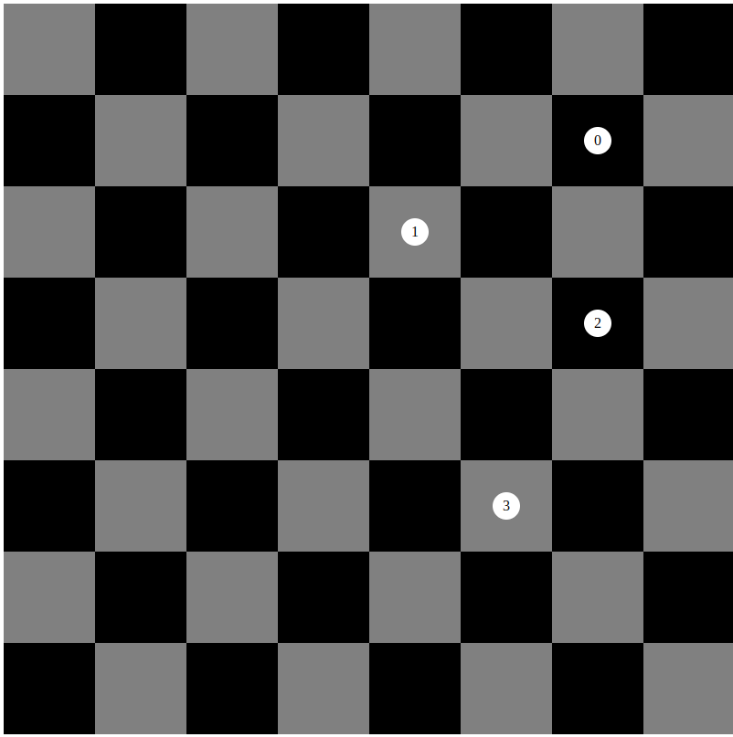

Knight's Travail
This assignment from The Odin Project shows that I can construct a node tree and use breadth first node traversal to return an optimum move sequence a knight can make to move between any two spaces on a chess board.